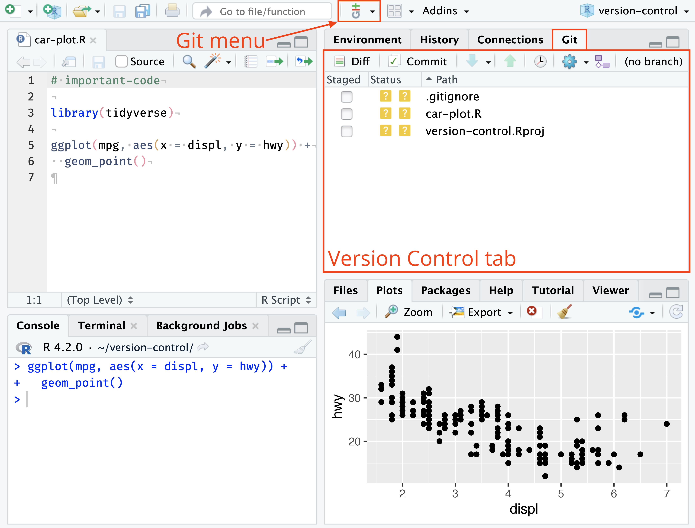
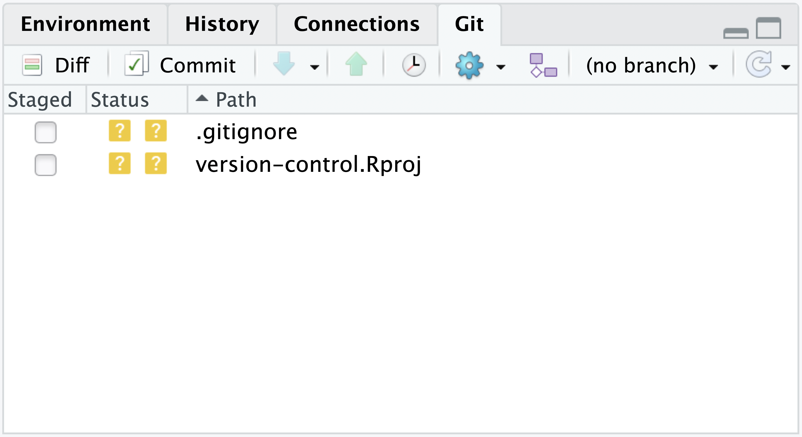
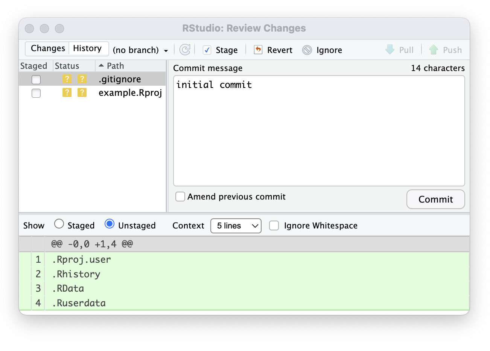
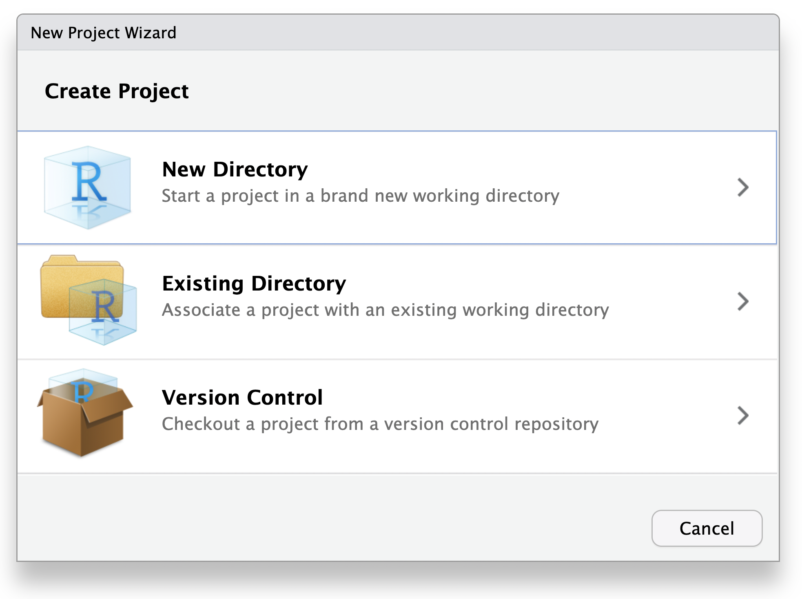

flowchart LR laptop["Laptop — computer<br/>write and review"] -->|Push commits| github["GitHub repository — remote<br/>host shared Git history"] github -->|Pull commits| accre["ACCRE — computing cluster<br/>run large computations"] accre -->|Push commits| github github -->|Pull commits| workstation["Office workstation — computer<br/>prepare the manuscript"]
Git and GitHub for Statistical Computing
BIOS 6301 · Introduction to Statistical Computing
Department of Biostatistics, Vanderbilt University Medical Center
Session 2
The question behind this session
Six weeks from now, can you identify which version of an analysis produced Table 1—and explain exactly what changed immediately before it?
Git turns a changing analysis into an inspectable sequence of checkpoints.
It is not primarily a homework-upload tool.
What you should be able to do
1 Explain why version control matters for statistical work.
2 Read Git status in the RStudio Git pane.
3 Distinguish saved edits, staged changes, local commits, and pushed commits.
4 Complete a safe Pull → Edit → Review → Commit → Push cycle.
5 Stop safely when a conflict, rejected push, or sensitive file appears.
6 Give course staff access to a private homework repository.
1 · Why Git?
Saving files is not version control
analysis.R
analysis-final.R
analysis-final2.R
analysis-final-revised.R
analysis-final-revised-SZ.RWhich file produced the submitted result?
What changed between final2 and final-revised?
Why was the change made?
Git records history without duplicate filenames
analysis.R
│
├── 4f73a9 Import cleaned cohort
├── 83c1d2 Define missing-value rule
├── a728e4 Calculate adjusted estimate
└── c091bf Revise Table 1 labelsEach commit is a checkpoint containing:
- the exact tracked files at that moment;
- the change from the prior checkpoint; and
- a short message explaining the purpose.
Example 1 · One analysis may run in several places
For example, you may work on the same project using a laptop, the ACCRE cluster, an office workstation, or another approved computing environment.
The boxes name different computing environments; GitHub is the remote transfer point for Git history, not another analysis machine.
Large or protected data can remain on approved storage.
Moving between machines requires a complete handoff
Before leaving Machine A
- Save and test the source.
- Review the changes.
- Commit the checkpoint.
- Push it to GitHub.
. . .
Before working on Machine B
- Open the correct repository.
- Check status.
- Pull the latest commits.
- Begin editing.
Example 2 · Preserve the code behind a publication
Suppose Table 1 was generated from commit:
c091bf Revise Table 1 labelsThat identifier lets the team recover:
- the analysis code;
- report source;
- configuration and documentation; and
- the change immediately before submission.
A manuscript date is not a code version. A commit identifies an exact snapshot.
Example 3 · A result unexpectedly changes
Yesterday:
Adjusted hazard ratio: 0.82Today:
Adjusted hazard ratio: 0.91Git helps answer:
- Which lines changed?
- When were they changed?
- Which checkpoint first produced the new result?
- Was the change intentional?
Example 4 · Give another analyst the repository—not copied files
Without history:
“Use the newest file in the folder. I think it is
final-revised.R.”
With Git and a shared repository:
“Clone this repository and begin from commit
c091bf. It contains the submitted Table 1 analysis.”
Instead of emailing or manually copying files, give the collaborator the repository address. They can clone it once, pull later commits, and inspect newer changes without overwriting the submitted version.
Git and GitHub do different jobs
Git—the version-control system on your computer
- Maintains a complete local repository and its commit history.
- Reviews changes, records staged snapshots, and creates commits.
- Performs most everyday operations without GitHub or a network connection.
. . .
GitHub—a remote service that hosts Git repositories
- Stores a remote copy of a Git repository and its history on GitHub’s servers.
- Lets computers and collaborators exchange commits through Clone, Pull, and Push.
- Adds web access, permissions, and collaboration around the repository.
Git records the history locally. GitHub hosts and coordinates a remote copy.
You decide which project files Git should track
Git does not automatically put every project file into its history. You choose what to track, and .gitignore helps keep specified files out.
Usually ask Git to track
.R,.Rmd, and.qmdsource files;- README files and data dictionaries; and
- small, safe configuration or teaching-data files when permitted.
Usually keep elsewhere or ignore
- large or protected datasets;
- passwords, tokens, and
.Renviron; and .Rhistory,.RData,.Rproj.user/, caches, and replaceable output.
The decision depends on whether a file is necessary, safe, and reasonably sized—not only on its extension.
2 · How Git describes the project
A repository is a project with recorded history
BIOS6301-mywork/
├── BIOS6301-materials.Rproj
├── course/
├── work/
└── .git/ ← repository history and settingsOpen the root RStudio project so RStudio can find the repository.
Do not create another repository inside work/.
Four locations explain the everyday workflow
flowchart LR W["Working files<br/>saved edits"] -->|Stage| S["Staging area<br/>next checkpoint"] S -->|Commit| C["Local repository<br/>recorded history"] C -->|Push| R["GitHub remote<br/>shared history"] R -->|Pull| C
The RStudio buttons make sense once these locations make sense.
Save, Stage, Commit, and Push are different actions
| Action | What changes? | Where? |
|---|---|---|
| Save | File contents | Working folder |
| Stage | Record the current file version for the next checkpoint | Staging area |
| Commit | A checkpoint is added | Local repository |
| Push | Local commits are copied | GitHub remote |
Saved ≠ staged ≠ committed ≠ pushed
Pull brings remote commits to this computer
Pull is appropriate when GitHub contains history that this computer does not.
Examples:
- you previously pushed from another machine;
- a collaborator pushed a change; or
- you are returning to a repository after time away.
Begin with status. If the working tree is clean, Pull before new work.
Status tells you what Git sees
In the RStudio Terminal, git status may report:
$ git status
On branch main
Changes to be committed:
modified: work/analysis.R
Changes not staged for commit:
modified: work/report.qmd
Untracked files:
work/notes.txt- To be committed means a staged snapshot is ready.
- Not staged means the saved working version is not yet in the staging area.
- Untracked means Git has not recorded the file before.
Three commands provide a quick diagnosis
git status— What is modified, staged, untracked, ahead, or behind?git diff— Which unstaged lines changed?git log --oneline -5— What are the five most recent commits?
These are reference commands. RStudio exposes the same ideas through menus, buttons, and panes.
RStudio shows the same Git status visually

Interface image: Posit RStudio User Guide.
If the Git tab is missing
Check these in order:
- Is the course-root project open?
- Was Git installed before RStudio was restarted?
- Does Tools → Global Options → Git/SVN show a Git executable?
- Is this folder actually the cloned repository?
Do not click “initialize a new repository” as a troubleshooting experiment.
The Git pane is a visual status report

| Part | Question it answers |
|---|---|
| Status | What happened to the file? |
| Path | Which file is affected? |
| Staged | Which file version is prepared for the next commit? |
| Diff | Which lines changed? |
Common file states
| State | Meaning | Typical next question |
|---|---|---|
| Untracked | Git has never recorded this file | Should it be tracked or ignored? |
| Modified | Tracked file differs from the last commit | What lines changed? |
| Staged | A file version is recorded in the staging area | Is this the version I intend to commit? |
| Committed | Change is recorded locally | Has it been pushed? |
An empty Git pane usually means the working files match the current commit.
One file moves through several states
flowchart LR U["Untracked"] -->|Stage| S["Staged"] M["Modified"] -->|Stage| S S -->|Commit| C["Committed locally"] C -->|Edit and save| M C -->|Push| G["Available on GitHub"]
The state changes; the filename can stay the same.
A diff answers “what changed?”
A diff makes the analytical decision visible:
- one argument was added;
- missing values are now removed; and
- the reported result may change.
Staging records a snapshot—not a live connection
Suppose analysis.R contains version A in the latest commit:
Edit and save version B
↓
Stage the file → staging area contains B
↓
Edit and save version C → working file contains C
↓
Commit → the new commit contains BVersion C is not lost; it remains as an unstaged working-file change.
If version C belongs in this commit, stage the file again before committing.
A commit is a documented checkpoint
Good messages complete the sentence:
This commit will …
| Weak | Informative |
|---|---|
changes |
Calculate mean outcome |
update |
Document missing-value rule |
final |
Add interpretation of treatment difference |
Commit after a small result renders and its checks pass.
History is a sequence of inspectable checkpoints
For example, a project history might contain:
c84e92a Add interpretation of treatment difference
51b6d2c Document missing-value rule
0a12f4e Import and check baseline dataEach row is one commit: a short identifier followed by its message.
When you open a commit in RStudio History, you can inspect its:
- full identifier, author, and time;
- files changed; and
- line-by-line differences.
History answers the opening question only when commits are small enough and messages are meaningful enough to interpret.
3 · The everyday RStudio workflow
The complete cycle
flowchart LR A["Check status"] --> B["Pull"] --> C["Edit, save,<br/>and test"] --> D["Review diff"] --> E["Stage"] --> F["Commit"] --> G["Push"] --> H["Check status"]
The short classroom version:
status → pull → code → review → stage → commit → push
The cycle uses two RStudio Git views
Git pane
- Read status and file paths.
- Pull, Push, and open History.

Review Changes window
- Inspect the diff and staged snapshot.
- Write the message and Commit.
Step 0 · Open the correct project and read status
- Open
BIOS6301-materials.Rprojat the repository root. - Open the Git tab.
- Refresh if needed.
- Explain every listed file before doing anything else.
An unexpected file is a reason to inspect—not a reason to check every box.
Step 1 · Pull before beginning new work
When status is clean, click Pull.
Pull is especially important when:
- you worked from another computer;
- a collaborator may have pushed; or
- you have not opened the project recently.
Read the Pull result before editing.
Step 2 · Edit, save, render, and check
Edit a source file such as:
work/session02-git-lab/analysis/report.RmdThe equivalent report.qmd starter is also available; use one format per work copy.
Then:
- Save the source.
- Knit, Render, or run it as appropriate.
- Inspect the result.
- Return to the Git pane.
Git cannot record an unsaved editor buffer.
Step 3 · Let status identify the changed files
For every listed file, ask:
- Did I intend to create or change it?
- Is it source, data, configuration, or generated output?
- Does it belong in the same analytical checkpoint?
- Could it contain a secret or protected information?
Do not stage until these questions have answers.
Step 4 · Inspect the diff
Select the file and click Diff, or click Commit to open Review Changes.
Interface image: Posit RStudio User Guide.
Review the diff as a statistical reviewer
For an analysis change, verify:
- the intended rows changed;
- the cohort or inclusion rule did not change accidentally;
- missing-value handling remains explicit;
- no credential or private path appeared;
- the interpretation matches the calculation; and
- the document still renders.
“The file changed” is less useful than “these lines changed for this reason.”
Step 5 · Stage the file versions for this checkpoint
In Review Changes:
- Choose one file and read its diff.
- Check Staged to record its current version in the staging area.
- Repeat for other files that belong in the same checkpoint.
- Read the staged diff to confirm the recorded versions.
- If you edit a staged file again, stage it again to update the snapshot.
Checking Staged does not modify or upload the working file.
Step 6 · Commit the staged snapshot
- Write a short message describing the analytical change.
- Read the staged diff once more.
- Click Commit.
- Read the result message.
The checkpoint now exists in the local repository.
GitHub does not have it yet.
Step 7 · Check whether the remote changed
If another person or machine may have pushed while you worked:
- confirm your work is committed;
- Pull from the intended remote;
- read the result; and
- resolve any new state before Push.
For short individual work, the initial Pull may be sufficient. For shared or long-running work, check again before Push.
Step 8 · Push the commits to GitHub
Click Push only after:
- the files were reviewed;
- the intended changes were committed; and
- any required Pull completed successfully.
Push copies commits—not uncommitted working files—to GitHub.
Step 9 · Verify the final state
A finished work cycle has three pieces of evidence:
- The Git pane contains no unexplained working changes.
- History contains the intended commit and message.
- Push reports success, so GitHub has the commit.
Check GitHub only as confirmation—not as a substitute for reading local status.
One complete example
| Moment | RStudio evidence | Meaning |
|---|---|---|
| Start | Git pane clean; Pull succeeds | Current starting point |
| Save | report.qmd is Modified |
Working file differs |
| Review | Diff shows intended lines | Change understood |
| Stage | Staged checkbox checked | Current file version recorded for the next checkpoint |
| Commit | History gains a message | Recorded locally |
| Push | Push reports success | GitHub updated |
| Finish | Status is understood | Safe stopping point |
4 · Multiple machines and unexpected states
A two-machine workflow is a relay, not automatic synchronization
sequenceDiagram participant L as Laptop participant G as GitHub participant A as ACCRE L->>G: Commit and Push G->>A: Pull before work A->>G: Commit and Push G->>L: Pull before continuing
Never edit the same unfinished change independently on both machines.
A rejected Push is protection
A rejected Push usually means GitHub has commits missing from this computer.
Safe response:
- Do not force Push.
- Confirm local work is committed.
- Pull from the intended remote.
- Read the result.
- Resolve any conflict, then Push again.
A conflict is a request for a decision
Git first tries to merge compatible changes automatically. It adds conflict markers only when it cannot safely determine the final content of a region.
Git preserved both versions so that you can construct the correct final text.
- Edit the region to keep, combine, or rewrite the appropriate content.
- Delete the conflict-marker lines.
- Save and test the resolved file.
- Stage the resolved version and commit the merge.
Uncheck Staged and Revert are very different
In Review Changes:
- Uncheck Staged: the next commit will not record that staged snapshot; the working-file edit remains unchanged.
- Revert: restore the working file toward its last committed version and erase the selected uncommitted edit.
Read the diff before Revert. Reverted uncommitted text may not be recoverable.
Git history is not a replacement for data backup
Git and GitHub are well suited to versioned source files.
They are not the correct system for:
- protected health information;
- very large raw or intermediate datasets;
- database snapshots; or
- files governed by institutional retention requirements.
Use approved storage and backup systems for data; commit the code and documentation needed to locate and analyze them.
5 · How BIOS6301 uses Git
The lab begins by cloning through RStudio

File → New Project
Version Control → Git
Paste:
https://github.com/slzhao/BIOS6301-materials.gitName the local directory
BIOS6301-mywork.Select Create Project.
One supplied recipe connects the private repository
Immediately after cloning, origin points to the instructor repository. In the RStudio Terminal, the supervised lab runs:
- The instructor address is preserved as
upstream. - The student’s empty private repository becomes
origin. - The first Push copies the course history and tests HTTPS authentication.
This is a setup recipe to copy—not command syntax to memorize.
This course uses two remotes
flowchart LR U["upstream<br/>public BIOS6301 materials<br/>instructor-managed"] -->|course update recipe| L["student computer<br/>course + private work"] L -->|RStudio Push| O["origin<br/>student private repository"] O -->|RStudio Pull| L
originstores the student’s private history.upstreamprovides instructor course updates.
RStudio Pull and Push communicate with origin
After the one-time setup:
| RStudio action | Direction |
|---|---|
| Pull | private origin → student computer |
| Push | student computer → private origin |
Use this for the student’s normal multi-machine workflow and private backup.
It does not automatically retrieve new instructor materials from upstream.
Course updates use a supplied recipe
First commit student work. Then run in the RStudio Terminal:
Translate the recipe:
- Download new instructor commits.
- Add them to the current local history.
- Inspect status and render affected work.
- Push the combined history to private
origin.
Folder ownership prevents most course-update conflicts
course/ instructor-managed: read and copy, but do not edit
work/ student-managed: create, edit, commit, and submitWhen the instructor and student edit different paths, upstream updates usually merge without a conflict.
Always commit student work before requesting course updates.
The first private Push completes HTTPS authentication
- Run the supplied
git push -u origin mainsetup line. - Git Credential Manager—or GitHub CLI—opens GitHub in a browser.
- Sign in and complete two-factor authentication.
- Authorize the credential helper if GitHub asks.
- Return to RStudio and read the Push result.
- Open the private repository and confirm that its history is present.
Later Pulls and Pushes should normally reuse the stored credential.
If the Terminal requests your ordinary GitHub account password, cancel and ask for help. Do not type a password or paste a personal access token.
Give course staff access without making the repository public

In BIOS6301-mywork:
- Settings → Collaborators → Add people
- Invite instructor
slzhao. - Invite TA
zongyue.teng@Vanderbilt.Edu. - Leave the repository Private.
The invitation may show Pending until course staff accept it.
Security is part of the workflow
Never commit:
- passwords, access tokens, or private keys;
.Renvironcontaining secrets;- protected health information;
- restricted research data; or
- identifiable participant-level teaching examples.
If sensitive information is committed, deleting the visible line is not enough. Contact the instructor or appropriate security support immediately.
Reference only · RStudio actions and commands
| RStudio action | Command-line equivalent |
|---|---|
| View repository state | git status |
| View unstaged changes | git diff |
| Check Staged | git add <file> |
| Uncheck Staged | git restore --staged <file> |
| Click Commit | git commit |
| Click Pull | git pull |
| Click Push | git push |
| Open History | git log |
Understanding the left column is today’s requirement. The right column is a translation reference.
The everyday rule
status → pull → code → review → stage → commit → push
- Git records the history; GitHub connects machines.
- Status tells you what state the repository is in.
- Diff review is part of statistical quality control.
- A commit is local until Push succeeds.
- Unexpected or destructive states are reasons to stop and inspect.
Exit check
Without using a command, explain:
- Why is
analysis-final2.Rweaker than a useful Git history? - What changes when you check Staged?
- What is the difference between Commit and Push?
- Why should you check status before Pull?
- How do
originandupstreamdiffer in this course?
Sources and next step
- RStudio version-control interface
- Git documentation
- Happy Git and GitHub for the useR
- GitHub authentication guidance
Next: use RStudio to create, inspect, commit, and push small analytical changes in the guided lab.
BIOS 6301 · Session 2 · Git and GitHub